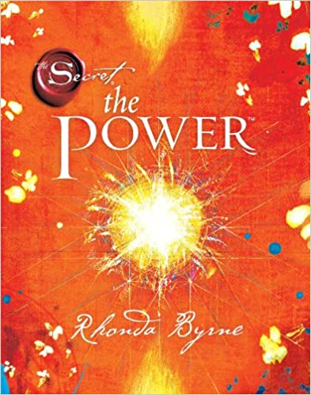
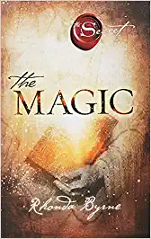
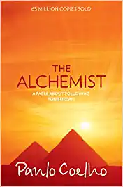

The Secret - The Power

Rhonda Byrne
The Secret – The Power is a self-help book, which revolves around the basic concept of POWER, which is
widespread around the globe. The knowledge about the Power can be associated with wealth, self-belief and
affection, in order to achieve contentment, aims and objectives in life. The book emphasizes on the fact
that if a person has faith in himself and approaches life with a positive attitude, he or she can achieve
success to the maximum limit.
The Magic

Rhonda Byrne
We all fail to realize the purpose of our life. We do live and fulfil most of our dreams, yet feel
something missing within us. This feeling of being lost and wandering around often comes without any answers
which can get frustrating and draining. This is exactly why we all need some 'magic' in our life to help us
out. This is where Rhonda Byrne’s 'The Magic' enters the fray.
The Alchemist

Abraham Ben Simeon
Paulo Coelho's enchanting novel has inspired a devoted following around the world. This story, dazzling
in its powerful simplicity and inspiring wisdom, is about an Andalusian shepherd boy named Santiago who
travels from his homeland in Spain to the Egyptian desert in search of a treasure buried in the Pyramids.
Along the way he meets a Gypsy woman, a man who calls himself
The Power of Your Subconscious Mind

Dr. Joseph Murphy
This remarkable book by Dr. Joseph Murphy, one of the pioneering voices of affirmative thinking, will
unlock for you the truly staggering powers of your subconscious mind. Combining time-honored spiritual
wisdom with cutting edge scientific research, Dr. Murphy explains how the subconscious mind influences every
single thing that you do and how, by understanding it and learning to control its incredible force, you can
improve the quality of your daily life.